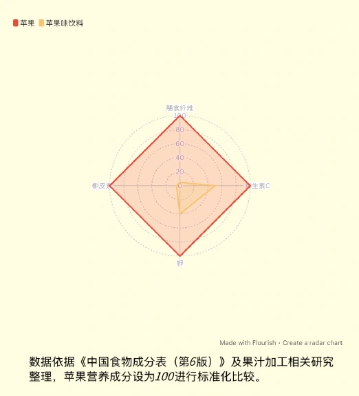

苹果味出走记
当苹果味不再属于苹果
当「苹果味」出现在越来越多的产品里，它还意味着真实的苹果吗？我们从货架上的产品与营养标签出发，观察口味、健康认知与商业传播的关系。


放大查看在内容与技术之间，
探索新的表达方式。
我关注内容如何被创造、组织与传播，也对技术如何改变表达方式保持好奇。从数据新闻中的可视化叙事，到公众号与短视频内容创作，再到 AI 辅助开发的交互工具，我尝试在不同媒介之间寻找更有趣、更有效的表达方式。
目前的实践方向包括数据新闻、新媒体内容运营、AIGC 视频创作和网页交互设计。
当苹果味不再属于苹果
当「苹果味」出现在越来越多的产品里，它还意味着真实的苹果吗？我们从货架上的产品与营养标签出发，观察口味、健康认知与商业传播的关系。

放大查看电动自行车行业研究与安全公益平台
围绕电动自行车行业资讯与骑行安全，把资料整理成公众号图文和短视频，让行业话题与安全知识更容易理解。
逐行 PDF 专注阅读器
读长文时，能不能只把注意力放在当前一行？我尝试把这个问题做成一个可以打开 PDF、调整阅读视野并记录笔记的网页工具。
我用 AI 辅助开发，将逐行聚焦和可调的周边淡化融入 PDF 阅读界面。工具也提供打开 PDF、翻页、缩放、多文档切换，以及高亮、下划线、评论和书签等阅读辅助功能。
可打开本地 PDF 或使用内置样本试读。PDF 阅读和内置英汉词典可离线使用；在阅读器内直接向 AI 提问需要配套的本地服务。独立网页提供复制提示词和跳转到外部 AI 服务的入口，翻译则取决于浏览器支持和可用服务。
体验阅读器 （在新标签页打开）